Get started with {morphology}
morphology.RmdWe need some example image first
The {morphology} package comes with the function
gen_fully_penetrable_spheres() to generate fully penetrable
spheres, where the matrix is labelled with 0, and the spheres with 1.
For demonstration purposes, however, an array with more than two
categories is more useful, and hence we combine two calls of this
function here:
library(morphology)
#> ! Package {morphology} is still in its experimental lifecycle stage.
#> ! Use at your own risk, and submit issues here:
#> ! <https://github.com/rogiersbart/morphology/issues>
set.seed(1234)
spheres_large <- gen_fully_penetrable_spheres(rep(200, 3), 0.6, 20)
spheres_small <- gen_fully_penetrable_spheres(rep(200, 3), 0.2, 10)
spheres <- pmax(spheres_large, spheres_small * 2L)Visually, the results look like this:
Note that since we allow working with vectors, matrices as well as arrays, we need a convention for the dimension names. For 3D arrays, we consider the array indices to be the y (row index), x (column index), and z (layer index) dimensions respectively. For 2D arrays or matrices, we use y and x correspondingly. For 1D vectors or arrays, we use x. This ensures we stick to the column-major order used everywhere in R, and at the same time that, when working in 1D, we work in the x direction, which should be more intuitive. Of course, for complete control, the user can always put their 1D or 2D data in a 3D array in a different way.
The following illustrates what happens internally in the {morphology}
workflow (through morphology:::prep_array()) with
vector/matrix/array inputs prior to any descriptor evaluation:
spheres[1, , 1] |> str()
#> int [1:200] 1 1 1 1 1 1 1 1 1 1 ...
spheres[1, , 1] |> morphology:::prep_array() |> str()
#> int [1, 1:200, 1] 1 1 1 1 1 1 1 1 1 1 ...
spheres[ , , 1] |> str()
#> int [1:200, 1:200] 1 1 1 1 1 1 1 1 1 1 ...
spheres[ , , 1] |> morphology:::prep_array() |> str()
#> int [1:200, 1:200, 1] 1 1 1 1 1 1 1 1 1 1 ...
spheres[ , , ] |> str()
#> int [1:200, 1:200, 1:200] 1 1 1 1 1 1 1 1 1 1 ...
spheres[ , , ] |> morphology:::prep_array() |> str()
#> int [1:200, 1:200, 1:200] 1 1 1 1 1 1 1 1 1 1 ...This means that
- any vector or 1D array is transformed into a one row, one layer 3D array, and
- any matrix or 2D array is transformed into a one layer 3D array.
For the sake of example, we continue in the rest of this document
with the 3D spheres array, but the workflow is equally
applicable to 2D or 1D arrays.
We use a simple but flexible workflow
The minimal {morphology} workflow consists of a pipe chain of 4 functions, which make up a mini domain-specific language (DSL) for nearest neighbour-based morphological descriptors:
description <- spheres |>
look_at("voxels", of_category = 0) |>
look_in(direction = "x") |>
look_for(neighbours = 41, within = 20) |>
describe()The different steps in the pipe chain serve the following purposes:
look_at()transforms the array into a data frame (tibble), and defines the target category, the neighbour category, and what information to include ("voxels"is the baseline for matching voxels,"components"adds connectivity information, and"paths"adds pathlenghts on top of connectivity),look_in()modifies the obtained data frame, to accommodate for the requesteddirection, and subset of all voxels (throughevery),look_for()then defines how manyneighboursto look for,withinwhat distance, and whether to include neighbours of the border voxels for edge correction, and then performs the nearest neighbour search, and finallydescribe()typically summarises the number of neighbours obtained in function of distance.
Splitting this up into different functions improves readability, but also allows us to break up the pipe chain, to cache the intermediate results, so multiple morphological descriptions can be made without repeating the same tasks. For instance, if we want both the x and y directional results, we can modify the above to:
intermediate_result <- spheres |>
look_at("voxels", of_category = 0)
description_x <- intermediate_result |>
look_in(direction = "x") |>
look_for(neighbours = 41, within = 20) |>
describe(name = "direction x")
description_y <- intermediate_result |>
look_in(direction = "y") |>
look_for(neighbours = 41, within = 20) |>
describe(name = "direction y")The result is always a data frame (tibble) with x and
y columns (and optionally a name column, when
a name is provided in the describe() call), where
x normally is distance, and y the number of
neighbours (but that can change in function of the type of summaries
requested, and scaling (see further below)):
description
#> # A tibble: 20 × 2
#> x y
#> <dbl> <dbl>
#> 1 0.5 1.90
#> 2 1.5 1.81
#> 3 2.5 1.73
#> 4 3.5 1.65
#> 5 4.5 1.57
#> 6 5.5 1.50
#> 7 6.5 1.43
#> 8 7.5 1.37
#> 9 8.5 1.31
#> 10 9.5 1.25
#> 11 10.5 1.20
#> 12 11.5 1.15
#> 13 12.5 1.11
#> 14 13.5 1.06
#> 15 14.5 1.02
#> 16 15.5 0.987
#> 17 16.5 0.954
#> 18 17.5 0.924
#> 19 18.5 0.896
#> 20 19.5 0.871We can visualise things with a helper function:
description |>
visualise(x = "distance", y = "neighbours")Or for the x and y directions, which behave similarly in this isotropic image:
When we want to use multiple summary functions in the
describe() step, we do not have to split up the pipe chain,
but can just continue with more describe() calls, only
making sure we provide an adequate name each time:
description <- spheres |>
look_at("voxels", of_category = 0) |>
look_in(direction = "x") |>
look_for(neighbours = 41, within = 20) |>
describe(q25, name = "q25", cumulative = TRUE) |>
describe(q50, name = "q50", cumulative = TRUE) |>
describe(q75, name = "q75", cumulative = TRUE)
description |>
visualise(x = "distance", y = "neighbours")
To enable this, we keep track of the nearest neighbour search results
by using object attributes. This does make the objects returned by
describe() quite a bit larger than just the neighbours
versus distance data frame. Hence, we included a function
finalise() dedicated at dropping those attributes:
lobstr::obj_size(description)
#> 1.14 GB
description <- description |> finalise()
lobstr::obj_size(description)
#> 2.55 kBFinally, there is one more function to learn about:
scale_by(). It does not really bring new possibilities in
terms of morphological description, but it can normalise or scale the
obtained results in different ways, which allows us to reproduce certain
morphological quantities exactly in the way they are defined in
literature. If instead of a number of neighbours in function of
distance, we want for instance a probability of obtaining two points of
our target category, in function of their separation distance, we can
do:
spheres |>
look_at("voxels", of_category = 0) |>
look_in(direction = "x") |>
look_for(neighbours = 41, within = 20) |>
describe(mean) |>
scale_by("inverse neighbourhood", "proportion") |>
visualise(x = "distance", y = "probability")Here we first divide the number of neighbours found by the derivative
of the total number of neighbours within the given distance (scale by
inverse neighbourhood; the derivative is taken automatically if
cumulative is FALSE in the
describe() call). This gives us the probability of finding
a neighbour of our category of interest at a given distance from a voxel
of that category. Additionally, we scale by the proportion
(i.e. the probability for a single point to belong to our
category of interest), to turn this into the probability of any two
points separated by the given distance, to both belong to the category
of interest.
This brief overview of the different functions, and how to combine them, should give you a pretty good idea on the {morphology} workflow. A more detailed look into what you can do with it is provided in the next section, and the function documentation provides more details on all the different arguments and what they can be used for.
We can approximate many common descriptors
In this section we go over several commonly used morphological quantities/descriptors, and illustrate how to implement them with the {morphology} workflow. For a series of benchmarks with analytical expressions, and comparison against other packages available in the R ecosystem, have a look at the “Benchmarks” article.
Volume fraction / proportion
While not using the {morphology} workflow, we quickly illustrate here
how to obtain the volume fraction, or proportion, of a certain category,
just to be complete. We use it later below for normalization through
scale_by(), to approximate other commonly used descriptors,
but in itself, it also is a very important descriptor. With a given
array, we can just use the mean of the logical expression that searches
for equality with the index of our category of interest to get the
corresponding volume fraction:
mean(spheres == 2)
#> [1] 0.2059961To list the volume fractions of all categories, we can do:
Two-point correlation function
The two-point correlation function provides the probability that two
points, separated by a distance r, both belong to the category of
interest. It corresponds to the most basic nearest neighbour search, but
we need to normalize this by the derivative of the total amount of
neighbours of any category, which can be approximated by the derivative
of the volume \(\frac{4}{3} \pi r^3\)
(i.e. \(4 \pi r^2\) for small
\(\Delta r\)) and additionally the
proportion \(\lambda\) of our
considered category, to obtain the two-point correlation function. The
scale_by() function can take care of this, as explained
above:
spheres |>
look_at("voxels", of_category = 2) |>
look_in(direction = "x") |>
look_for(neighbours = 41, within = 20) |>
describe(mean) |>
scale_by("inverse neighbourhood", "proportion") |>
visualise(x = "distance", y = "probability")Note that a bivariate version of this can be obtained by providing
another category to the in_relation_to argument in the
look_at() call. Also note this is related to the covariance
function, variogram or correlogram in classic geostatistics, when
applied to an indicator field of the target category. Instead of looking
at the amount of voxel pairs both in the target category, there, the
variance of the difference between the voxel pairs (variogram), the
covariance of the voxel pairs (covariance function) or the correlation
between them is considered. These descriptors thus average over all
possible events (0, 0), (1, 0), (0, 1) and (1, 1), while here we only
provide the proportion of (1, 1) events. Hence, to approximate these
descriptors, we for instance additionally need to evaluate the
proportion of (0, 0) events, and then the remaining proportion can be
attributed to (0, 1) or (1, 0), which are equivalent in terms of
covariance, correlation and the variance of the difference. For
distances beyond the correlation length, the covariance and correlogram
become zero, while half of the variogram (semivariogram) goes to the
variance of the corresponding Bernoulli variable \(\lambda ( 1-\lambda)\), with \(\lambda\) the proportion of the target
category.
Spectral density function
The spectral density function can be obtained by taking the Fourier transform of the two-point correlation function according to the Wiener-Khinchin theorem (see e.g. Bostanabad et al. (2018)). Here we postprocess the outputs of the two-point correlation function calculation, to obtain the strengths of the different harmonics:
spheres |>
look_at("voxels", of_category = 2) |>
look_in(direction = "x") |>
look_for(neighbours = 41, within = 20) |>
describe(mean) |>
scale_by("inverse neighbourhood", "proportion") |>
transform(x = 0:(length(x)-1), y = fft(y) |> Mod()) |>
transform(y = c(y[1], 2 * y[2:length(y)])) |>
subset(x <= length(x) / 2) |>
visualise(x = "frequency", y = "strength")Note that the frequency here is relative to the maximum search
distance within.
Reduced second moment / K function
The reduced second moment, or K function, is the expectation of the number of neighbours within a distance \(r\), normalized by the proportion of our considered category. Hence, it is the cumulative version of our nearest neighbour search, normalized in a different way:
spheres |>
look_at("voxels", of_category = 2) |>
look_in(direction = "x") |>
look_for(neighbours = 41, within = 20) |>
describe(mean, cumulative = TRUE) |>
scale_by("inverse proportion") |>
visualise(x = "distance", y = "reduced second moment")Note that a bivariate version of this can be obtained by providing
another category to the in_relation_to argument in the
look_at() call.
Pair correlation function
The pair correlation function is again related to the above two, with
the main difference that it goes to one at large distance, for which any
spatial correlation disappears. This is achieved by dividing the
two-point correlation function by the probability to have both voxels
within the target phase at arbitrary large distance, which is given by
the square of the proportion \(\lambda^2\) (for the two-point correlation
function, we multiply with the proportion, so dividing again by the
square proportion results in a division by the proportion, or scaling by
the "inverse proportion"):
spheres |>
look_at("voxels", of_category = 2) |>
look_in(direction = "x") |>
look_for(neighbours = 41, within = 20) |>
describe(mean) |>
scale_by("inverse neighbourhood", "inverse proportion") |>
visualise(x = "distance", y = "pair correlation function")
Alternatively, it can be obtained by using the non-cumulative (or
derivative) version of the reduced second moment, scaled by the total
amount of neighbours (derivative of the volume \(\frac{4}{3} \pi r^3\), or \(4 \pi r^2\) for small \(\Delta r\)). Note that a bivariate version
of this can be obtained by providing another category to the
in_relation_to argument in the look_at()
call.
Cluster function
The cluster function provides the probability that two points
separated by a certain distance belong to the category of interest and
that they are connected through voxels of the same category. To enable
this, we need to identify the connected components within a given
category. Given our workflow, we can only differentiate between
connected and disconnected neighbours at the describe()
step:
spheres |>
look_at("components", of_category = 2) |>
look_in(direction = "x") |>
look_for(neighbours = 41, within = 20) |>
describe(mean, name = "total", cumulative = TRUE) |>
describe(mean, connected = TRUE, cumulative = TRUE, name = "connected") |>
describe(mean, connected = FALSE, cumulative = TRUE, name = "disconnected") |>
visualise(x = "distance", y = "neighbours")The ratio of the connected neighbours versus the total neighbours gives us the probability of being connected, given the fact that we already have two voxels belonging to the category of interest. If, on the other hand, we scale the connected neighbours curve by the total number of neighbours of any category which can be approximated by \(\frac{4}{3} \pi r^3\), and additionally the proportion of our considered category, we obtain a cumulative version of the classic cluster function:
spheres |>
look_at("components", of_category = 2) |>
look_in(direction = "x") |>
look_for(neighbours = 41, within = 20) |>
describe(mean, connected = TRUE, cumulative = TRUE) |>
scale_by("inverse neighbourhood", "proportion") |>
visualise(x = "max distance", y = "probability")
#> Warning: Removed 1 row containing missing values or values outside the scale range
#> (`geom_point()`).
#> Warning: Removed 1 row containing missing values or values outside the scale range
#> (`geom_line()`).
Or by using the incremental volume change, we can get the non-cumulative version, or the classic cluster function:
spheres |>
look_at("components", of_category = 2) |>
look_in(direction = "x") |>
look_for(neighbours = 41, within = 20) |>
describe(mean, connected = TRUE) |>
scale_by("inverse neighbourhood", "proportion") |>
visualise(x = "distance", y = "probability")
Connected component size distribution
If we now go back to the cumulative version of the amount of connected neighbours, and we could go to infinite numbers of neighbours and distances, we would obtain the size distribution of the connected components of our category of interest at the far right side of something like this:
spheres |>
look_at("components", of_category = 2) |>
look_in(direction = "xyz") |>
look_for(neighbours = 500, within = 20) |>
describe(q25, connected = TRUE, name = "q25", cumulative = TRUE) |>
describe(q50, connected = TRUE, name = "q50", cumulative = TRUE) |>
describe(q75, connected = TRUE, name = "q75", cumulative = TRUE) |>
visualise()However, as the nearest neighbour search becomes computationally
intractable at some point, it can be hard to calculate the actual size
distribution through the {morphology} workflow, and it can better be
done by just counting component ids in the output from
look_at():
spheres |>
look_at("components", of_category = 2) |>
_[["component"]] |>
table() |>
density(cut = 0, n = 50, bw = 0.5) |>
_[c("x", "y")] |>
as.data.frame() |>
visualise(x = "connected component size", y = "probability")
With the full workflow, we hit the upper limit of neighbours with the upper tail of the distribution around a distance of 10, and distances beyond 20 are not investigated. The cumulative connected neighbours however do provide a local approximation, and illustrates what happens when we increase the local window (increasing distance), which is very valuable as well. A more robust measure than the connected component size distribution, is the distribution of shortest distances of the category of interest, to any other category, which is also called the radial density distribution. This is typically what is used for e.g. the pore size distribution in porous media. The evaluation of this is illustrated further below.
Lineal path function
By default, the identification of connected components uses a 3D disk kernel, 3 voxels wide in every dimension. The kernel can be modified, however, and for the lineal path function, we look at connectivity in 1D, in our case along x, y, or z, as follows:
spheres |>
look_at("components", of_category = 2, kernel_width = c(1, 3, 1)) |>
look_in(direction = "x") |>
look_for(neighbours = 41, within = 20) |>
describe(mean, name = "total") |>
describe(mean, connected = TRUE, name = "connected") |>
describe(mean, connected = FALSE, name = "disconnected") |>
visualise(x = "distance", y = "neighbours")Similar to the cluster function, the ratio of the connected
neighbours versus the total neighbours gives us the probability of being
connected, given the fact that we already have two voxels belonging to
the category of interest. If, on the other hand, we scale the connected
neighbours curve by the total number of neighbours of any category,
which can be approximated in 1D by \(2r\) (its derivative is used here in fact,
as cumulative = FALSE), and additionally the proportion of
our considered category, we obtain the lineal path function:
spheres |>
look_at("components", of_category = 2, kernel_width = c(1, 3, 1)) |>
look_in(direction = "x") |>
look_for(neighbours = 41, within = 20) |>
describe(mean, connected = TRUE) |>
scale_by("inverse neighbourhood", "proportion") |>
visualise(x = "distance", y = "probability")Note that it is also possible to use a 2D kernel, which allows checking 2D connectivity in 3D arrays for instance, which can be compared to 2D connectivity of 2D arrays.
Chord length distribution
The chord length distribution function is basically a size distribution for 1D connected components, and hence it is related to the lineal path function in the same way as the size distribution is related to the isotropic cluster function:
spheres |>
look_at("components", of_category = 2, kernel_width = c(1, 3, 1)) |>
look_in(direction = "x") |>
look_for(neighbours = 41, within = 20) |>
describe(q25, connected = TRUE, name = "q25", cumulative = TRUE) |>
describe(q50, connected = TRUE, name = "q50", cumulative = TRUE) |>
describe(q75, connected = TRUE, name = "q75", cumulative = TRUE) |>
visualise(x = "distance", y = "neighbours")Only at infinite numbers of neighbours and infinite distance, our
approximation would always be exact, but for practical purposes, and
small connected component sizes, the local approximation may be
sufficient. When the actual distribution is really required, it is hence
better to count component ids in the output from
look_at():
spheres |>
look_at("components", of_category = 2, kernel_width = c(1, 3, 1)) |>
_[["component"]] |>
table() |>
density(cut = 0, n = 50, bw = 0.5) |>
_[c("x", "y")] |>
as.data.frame() |>
visualise(x = "chord length", y = "probability")
Nearest neighbour distance distribution function
The nearest neighbour distance distribution function provides the
cumulative distribution of distances between any point of a certain
category, to its nearest neighbour of the same category. It is typically
used in the description of spatial point patterns (e.g.
spatstat.explore::G3est()), and can be obtained with:
spheres |>
look_at("voxels", of_category = 2) |>
look_in(direction = "xyz") |>
look_for(neighbours = 1, within = 20) |>
describe(mean, cumulative = TRUE) |>
visualise(x = "distance", y = "neighbours")While not so useful for smooth categorical arrays, as the nearest
neighbour then typically is only a single voxel away, it can easily be
generalized to a summary of the number of neighbours within a certain
distance, which corresponds to the two-point correlation function and
the other related quantities described above (with the proper scaling),
or alternatively the distribution of the distance to the nth nearest
neighbour, which we can obtain by describing a summary function
of = "distance" instead of
of = "neighbours":
spheres |>
look_at("voxels", of_category = 2) |>
look_in(direction = "xyz") |>
look_for(neighbours = 50, within = 20) |>
describe(min, of = "distance", name = "min") |>
describe(mean, of = "distance", name = "mean") |>
describe(max, of = "distance", name = "max") |>
visualise(x = "neighbour", y = "distance")where summaries of the classic distribution are included at
x == 1.
Empty space function
The idea of the empty space function is similar. The only difference is that we are not performing a self-query (i.e. we look for neighbours of the same category), but a query for all voxels, matching them with neighbours of the category of interest:
spheres |>
look_at("voxels", of_category = c(0, 1, 2), in_relation_to = 2) |>
look_in(direction = "xyz") |>
look_for(neighbours = 1, within = 20) |>
describe(mean, cumulative = TRUE) |>
visualise(x = "distance", y = "cumulative probability")When not looking at all categories, but performing a query for a single specific category versus another one, we generalize this to an inter-category distance function:
Radial density distribution / Pore size distribution
When we use this inter-category distance function to look at the shortest distances from our category of interest, to any other category, we obtain the size distribution of our category. This is typically used for e.g. the pore size distribution in porous media, where it is commonly described as the statistical distribution of the radius of the biggest sphere that can be fitted into a pore at a given location. We can implement it as follows:
spheres |>
look_at("voxels", of_category = 2, in_relation_to = c(0, 1)) |>
look_in(direction = "xyz") |>
look_for(neighbours = 1, within = 40) |>
describe(mean) |>
visualise(x = "sphere radius", y = "probability")Whereas the cumulative distribution can be obtained with:
spheres |>
look_at("voxels", of_category = 2, in_relation_to = c(0, 1)) |>
look_in(direction = "xyz") |>
look_for(neighbours = 1, within = 40) |>
describe(mean, cumulative = TRUE) |>
visualise(x = "sphere radius", y = "cumulative probability")
Specific surface area
The surface area of a certain category can also be obtained by using the inter-category distance function, but extending the query now to six neighbours, while limiting the maximum distance to one, and summing up the results:
spheres |>
look_at("voxels", of_category = 1, in_relation_to = c(0, 2)) |>
look_in(direction = "xyz") |>
look_for(neighbours = 6, within = 1) |>
describe(sum, at = 1, cumulative = TRUE)
#> # A tibble: 1 × 2
#> x y
#> <dbl> <dbl>
#> 1 1 855461Where we can get the specific surface area by dividing the result by the volume of category 0 (divide by the product of the proportion times the dimensions of the array):
spheres |>
look_at("voxels", of_category = 1, in_relation_to = c(0, 2)) |>
look_in(direction = "xyz") |>
look_for(neighbours = 6, within = 1) |>
describe(sum, at = 1, cumulative = TRUE) |>
scale_by("inverse proportion", "inverse dimensions")
#> # A tibble: 1 × 2
#> x y
#> <dbl> <dbl>
#> 1 1 0.234Note by modifying the direction to look in to one that is 2D or 1D, we can extend this respectively to perimeter length and transition probabilities (for the latter, see further below).
Interface area
The interface area can be obtained in a similar way, by using two specific categories:
spheres |>
look_at("voxels", of_category = 1, in_relation_to = 2) |>
look_in(direction = "xyz") |>
look_for(neighbours = 6, within = 1) |>
describe(sum, at = 1, cumulative = TRUE)
#> # A tibble: 1 × 2
#> x y
#> <dbl> <dbl>
#> 1 1 365520Note also here by modifying the direction, we can extend this to inter-category perimeter and inter-category transition probabilities.
Transition probabilities
We can quantify transition probabilities as well, from one voxel to the next, by looking at the close neighbours as for the interface area, but normalising by the total area around all individual voxels of the target phase (obtained by proportion times overall dimensions times the number of faces per voxel (3)). Hence, the probability of going from a voxel of category 1 to one of category 2 is:
spheres |>
look_at("voxels", of_category = 1, in_relation_to = 2) |>
look_in(direction = "xyz") |>
look_for(neighbours = 6, within = 1) |>
describe(sum, at = 1, cumulative = TRUE) |>
scale_by("inverse proportion", "inverse dimensions") |>
transform(y = y / 3)
#> x y
#> 1 1 0.03337442All transition probabilities for a given starting category sum up to one, which we can see if we evaluate the one for category 0:
spheres |>
look_at("voxels", of_category = 1, in_relation_to = 0) |>
look_in(direction = "xyz") |>
look_for(neighbours = 6, within = 1) |>
describe(sum, at = 1, cumulative = TRUE) |>
scale_by("inverse proportion", "inverse dimensions") |>
transform(y = y / 3)
#> x y
#> 1 1 0.04473489And finally the self-query one, where we additionally have to divide by 2, as every face is counted twice here:
Coarseness
The coarseness (Coker and Torquato (1995)) is defined as the standard deviation of the local volume fraction of our target phase, divided by the volume fraction, and depends on the used window size. Estimating it with {morphology} is rather straightforward (here in 1D) as
spheres |>
look_at("voxels", of_category = 2) |>
look_in(direction = "x") |>
look_for(neighbours = 41, within = 20) |>
describe(sd, cumulative = TRUE) |>
scale_by("inverse neighbourhood") |>
visualise(x = "window radius", y = "coarseness")
#> Warning: Removed 1 row containing missing values or values outside the scale range
#> (`geom_point()`).
#> Warning: Removed 1 row containing missing values or values outside the scale range
#> (`geom_line()`).Tortuosity
Tortuosity is the average ratio of shortest paths connecting two voxels through voxels of their own category, to the euclidean distance between them. We can obtain this with {morphology} by calculating the shortest paths, and scaling them by the inverse distance:
spheres[1:100, 1:100, 1:100] |>
look_at("paths", of_category = 0) |>
look_in("x", every = 1/c(20, 1, 20)) |>
look_for(neighbours = 50, within = 100, from_border = TRUE) |>
describe(mean, of = "pathlength") |>
scale_by("inverse distance") |>
visualise(x = "distance", y = "tortuosity")
#> Warning: Removed 1 row containing missing values or values outside the scale range
#> (`geom_point()`).
#> Warning: Removed 1 row containing missing values or values outside the scale range
#> (`geom_line()`).Because of the default values for at in the
non-cumulative case, however, there is a mismatch here between the
pathlengths and distances, at small distances. We can fix this by
specifying at in such a way that the bin centers align with
the pathlengths as follows:
spheres[1:100, 1:100, 1:100] |>
look_at("paths", of_category = 0) |>
look_in("x", every = 1/c(20, 1, 20)) |>
look_for(neighbours = 50, within = 100, from_border = TRUE) |>
describe(mean, of = "pathlength", at = seq(0.5, 99.5, 1)) |>
scale_by("inverse distance") |>
visualise(x = "distance", y = "tortuosity")Note that, depending on the dimensions of the connectivity kernel specified, it is also possible to evaluate shortest paths in 2D, within a 3D array, to compare results with those of a 2D array. This is similar to the evaluation of 3D (cluster function), 2D, or 1D (lineal path) connectivity, except that evaluating shortest paths in 1D does not make sense, as this would reduce to the lineal path function.
Quality of connections function
This descriptor, introduced by Bagherian et al. (2021), corresponds basically to inverse tortuosity in function of distance.
spheres[1:100, 1:100, 1:100] |>
look_at("paths", of_category = 0) |>
look_in("x", every = 1/c(20, 1, 20)) |>
look_for(neighbours = 50, within = 100, from_border = TRUE) |>
describe(
mean,
of = "pathlength",
at = seq(0.5, 99.5, 1)
) |>
scale_by("inverse distance") |>
transform(y = 1 / y) |>
visualise(x = "distance", y = "quality of connections")
We do have some drawbacks
Large numbers of neighbours becomes problematic
Nearest neighbour search becomes intractable very quickly, especially in 2D or 3D, where it scales quadratically or cubically with distance. Hence we limit the amount of neighbours and/or the maximum search distance, which causes the morphological quantities to level off (when cumulative), or drop to zero (otherwise) when we reach those limits. There are some approaches to counter this, however:
- Make use of
everywithinlook_in()for longer-range investigations. This should give similar results, if scaled properly (with"inverse every"), but reduces the amount of neighbours linearly, quadratically, or cubically, when working in 1D, 2D or 3D. - Instead of isotropic 3D search, make use of isotropic 2D search, which makes that things scale quadratically instead of cubically.
- Instead of isotropic 2D search, make use of directional 1D search, which makes that things scale linearly instead of quadratically.
- Make use of approximate nearest neighbour search, which may improve computing time, but memory limitations are still the same.
- Combine any of the above.
Here we illustrate the effect of every:
system.time(
a <- spheres |>
look_at("voxels", of_category = 2) |>
look_in(direction = "x") |>
look_for(neighbours = 41, within = 20) |>
describe(mean, name = "every = 1/1", cumulative = TRUE)
)
#> user system elapsed
#> 14.36 4.15 19.97
system.time(
b <- spheres |>
look_at("voxels", of_category = 2) |>
look_in(direction = "x", every = 1 / 2) |>
look_for(neighbours = 41, within = 20) |>
describe(mean, name = "every = 1/2", at = seq(0, 20, 2), cumulative = TRUE) |>
scale_by("inverse every")
)
#> user system elapsed
#> 1.81 0.66 2.49
rbind(a, b) |> visualise(x = "distance", y = "neighbours")
lobstr::obj_sizes(a, b)
#> * 705.50 MB
#> * 88.21 MBNote that by providing a list of two elements to every,
the target category and the neighbour category datasets can be reduced
in different ways.
Here we illustrate the effect of dimensionality:
system.time(
a <- spheres |>
look_at("voxels", of_category = 2) |>
look_in(direction = "xyz") |>
look_for(neighbours = 524, within = 5) |>
describe(mean, name = "3D", cumulative = TRUE) |>
scale_by("inverse neighbourhood")
)
#> user system elapsed
#> 176.85 154.81 509.91
system.time(
b <- spheres |>
look_at("voxels", of_category = 2) |>
look_in(direction = "xy") |>
look_for(neighbours = 79, within = 5) |>
describe(mean, name = "2D", cumulative = TRUE) |>
scale_by("inverse neighbourhood")
)
#> user system elapsed
#> 21.93 6.90 30.00
system.time(
c <- spheres |>
look_at("voxels", of_category = 2) |>
look_in(direction = "x") |>
look_for(neighbours = 11, within = 5) |>
describe(mean, name = "1D", cumulative = TRUE) |>
scale_by("inverse neighbourhood")
)
#> user system elapsed
#> 4.17 1.08 5.31
rbind(a, b, c) |> visualise(x = "distance", y = "probability")
#> Warning: Removed 3 rows containing missing values or values outside the scale range
#> (`geom_point()`).
#> Warning: Removed 3 rows containing missing values or values outside the scale range
#> (`geom_line()`).
lobstr::obj_sizes(a, b, c)
#> * 9.02 GB
#> * 1.49 GB
#> * 258.88 MBAnd finally of approximate nearest neighbour search:
system.time(
a <- spheres |>
look_at("voxels", of_category = 2) |>
look_in(direction = "x") |>
look_for(neighbours = 41, within = 20) |>
describe(mean, name = "error = 0")
)
#> user system elapsed
#> 13.71 4.69 19.28
system.time(
b <- spheres |>
look_at("voxels", of_category = 2) |>
look_in(direction = "x") |>
look_for(neighbours = 41, within = 20, error = 5) |>
describe(mean, name = "error = 5") |>
scale_by("inverse every")
)
#> user system elapsed
#> 13.00 4.41 17.68
rbind(a, b) |> visualise(x = "distance", y = "neighbours")
lobstr::obj_sizes(a, b)
#> * 705.50 MB
#> * 705.49 MBOnly one kind of edge correction available
Only minus sampling is currently implemented. This means the maximum possible neighbour distance to look for is half the size of the array, although it is better to use shorter distances than that. The effect of the correction is illustrated here:
a <- spheres |>
look_at("voxels", of_category = 2) |>
look_in(direction = "x") |>
look_for(neighbours = 81, within = 40) |>
describe(mean, name = "from_border = FALSE")
b <- spheres |>
look_at("voxels", of_category = 2) |>
look_in(direction = "x") |>
look_for(neighbours = 81, within = 40, from_border = TRUE) |>
describe(mean, name = "from_border = TRUE")
rbind(a, b) |> visualise(x = "distance", y = "neighbours")
The wrap-around correction, used e.g. by Pant (2016) and Lemmens
et al. (2019), is not that hard to implement for directional
search (using c() possibly in combination with
aperm()), but does introduce discontinuities and
corresponding biases as well. The main problem with it is however the
extension towards 2D and 3D isotropic search, where it requires more
memory.
a <- spheres |>
look_at("voxels", of_category = 2) |>
look_in(direction = "y") |>
look_for(neighbours = 81, within = 40, from_border = TRUE) |>
describe(mean, name = "minus sampling")
b <- c(spheres) |>
look_at("voxels", of_category = 2) |>
look_in(direction = "x") |>
look_for(neighbours = 81, within = 40, from_border = TRUE) |>
describe(mean, name = "wrap around")
rbind(a, b) |> visualise(x = "distance", y = "neighbours")